Sig: Práctica: Traducción de Infijo Sup: Análisis Sintáctico Ascendente en Ant: Conceptos Básicos del Análisis Con:

donde:


donde
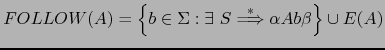
| 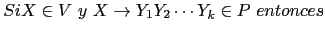 | |||
| 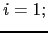 | |||
| 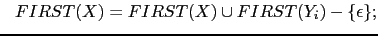 | |||
| 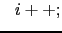 | |||
| 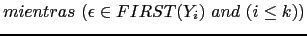 |
| 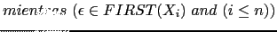 |
Repetir los siguientes pasos hasta que ninguno de los conjuntos  cambie:
cambie:
Para la construcción de las tablas de un analizador SLR se construye el autómata finito determinista (DFA) 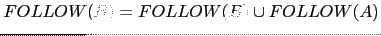 equivalente al NFA presentado en la sección 4.4 usando el algoritmo de construcción del subconjunto.
Como recordará, en la construcción del subconjunto,
partiendo del estado de arranque 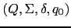 del NFA con  -transiciones
se calcula su clausura
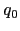 y las
clausuras de los conjuntos de estados
-transiciones
se calcula su clausura
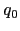 y las
clausuras de los conjuntos de estados
 a los que transita. Se repite el proceso
con los conjuntos resultantes hasta que no se introducen nuevos
conjuntos-estado.
a los que transita. Se repite el proceso
con los conjuntos resultantes hasta que no se introducen nuevos
conjuntos-estado.
La clausura
 de un subconjunto de estados del autómata
de un subconjunto de estados del autómata  esta formada
por todos los estados que pueden ser alcanzados mediante transiciones
etiquetadas con la palabra vacía (denominadas
esta formada
por todos los estados que pueden ser alcanzados mediante transiciones
etiquetadas con la palabra vacía (denominadas  transiciones)
desde los estados de
transiciones)
desde los estados de  . Se incluyen en
. Se incluyen en
 , naturalmente los estados
de
, naturalmente los estados
de  .
.
Aquí
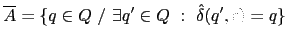 denota la función de transición del autómata extendida a cadenas
de  .
.
En la práctica, y a partir de ahora así lo haremos, se prescinde de diferenciar
entre  y
usándose indistintamente la notación
y
usándose indistintamente la notación
 para ambas funciones.
para ambas funciones.
La clausura puede ser computada usando una estructura de pila o aplicando la expresión recursiva dada en la ecuación 4.1.
Para el NFA mostrado en el ejemplo 4.4.1 el DFA construído mediante esta
técnica es el que se muestra en la figura 4.3. Se ha utilizado el símbolo
# como marcador. Se ha omitido el número 3 para que los estados coincidan
en numeración con los generados por jison (véase el cuadro
![[*]](crossref.png) ).
).
Un analizador sintáctico LR utiliza una tabla para su análisis. Esa tabla se construye a partir de la tabla de transiciones del DFA. De hecho, la tabla se divide en dos tablas, una llamada tabla de saltos o tabla de gotos y la otra tabla de acciones.
La tabla goto de un analizador SLR
no es más que la tabla de transiciones del autómata DFA
obtenido aplicando la construcción del subconjunto al NFA
definido en 4.4.4. De hecho es la tabla
de transiciones restringida a  (recuerde que el alfabeto del
autómata es
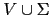,
(recuerde que el alfabeto del
autómata es
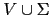,  denota al i-ésimo estado resultante
de aplicar la construcción del subconjunto y que denota al conjunto de LR(0)
item asociado con dicho estado):
denota al i-ésimo estado resultante
de aplicar la construcción del subconjunto y que denota al conjunto de LR(0)
item asociado con dicho estado):
La parte de la función de transiciones
del DFA que corresponde a los terminales que no producen rechazo,
esto es,
 se adjunta a una tabla que se denomina tabla de acciones.
La tabla de acciones es una tabla de doble entrada en los estados
y en los símbolos de
se adjunta a una tabla que se denomina tabla de acciones.
La tabla de acciones es una tabla de doble entrada en los estados
y en los símbolos de  .
Las acciones de transición ante terminales
se denominan acciones de desplazamiento o (acciones shift):
.
Las acciones de transición ante terminales
se denominan acciones de desplazamiento o (acciones shift):
Cuando un estado  contiene un LR(0)-item de la forma
contiene un LR(0)-item de la forma
 ,
esto es, el estado corresponde a un posible rechazo,
ello indica que hemos llegado a un final del prefijo viable, que hemos
visto
,
esto es, el estado corresponde a un posible rechazo,
ello indica que hemos llegado a un final del prefijo viable, que hemos
visto  y que, por tanto, es probable que
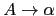
sea el handle de la forma sentencial derecha actual. Por tanto,
añadiremos en entradas de la forma
y que, por tanto, es probable que
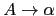
sea el handle de la forma sentencial derecha actual. Por tanto,
añadiremos en entradas de la forma  de la tabla de acciones
una acción que indique que hemos encontrado el mango en la
posición actual y que la regla asociada es
.
A una acción de este tipo se la denomina acción de reducción.
de la tabla de acciones
una acción que indique que hemos encontrado el mango en la
posición actual y que la regla asociada es
.
A una acción de este tipo se la denomina acción de reducción.
La cuestión es, ¿para que valores de
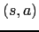 debemos disponer que
la acción para  es de reducción?
es de reducción?
Podríamos decidir que ante cualquier terminal
que produzca un rechazo del autómata, pero podemos ser un poco mas
selectivos. No cualquier terminal puede estar en la entrada en el momento
en el que se produce la antiderivación o reducción.
Observemos que si
es el handle
de  es porque:
es porque:
Por tanto, cuando estamos reduciendo por
los únicos terminales legales que cabe esperar en una reducción por
son los terminales
 .
.
Dada una gramática
 , podemos construir las tablas de acciones (action table) y transiciones (gotos table) mediante el siguiente algoritmo:
, podemos construir las tablas de acciones (action table) y transiciones (gotos table) mediante el siguiente algoritmo:
| 1 | S
|
| 2 | S
|
partiendo del autómata finito determinista que se construyó en la figura 4.3 y calculando los conjuntos de primeros y siguientes
| FIRST | FOLLOW | |
| S | a, |
b, $ |
obtenemos la siguiente tabla de acciones SLR:
| a | b | $ | |
| 0 | s2 | r2 | r2 |
| 1 | aceptar | ||
| 2 | s2 | r2 | r2 |
| 4 | s5 | ||
| 5 | r1 | r1 |
Las entradas denotadas con 
 (
( por shift) indican un desplazamiento
al estado
por shift) indican un desplazamiento
al estado  , las denotadas con
, las denotadas con 
 (
( por reduce o reducción) indican una operación
de reducción o antiderivación por la regla
por reduce o reducción) indican una operación
de reducción o antiderivación por la regla  . Las entradas vacías
corresponden a acciones de error.
. Las entradas vacías
corresponden a acciones de error.
El método de análisis LALR usado por jison
es una extensión del método SLR esbozado
aqui. Supone un compromiso entre potencia (conjunto de gramáticas
englobadas) y eficiencia (cantidad de memoria utilizada, tiempo de
proceso).
Veamos como jison aplica la construcción del subconjunto a la
gramática del ejemplo
4.4.1.
Para ello construimos el siguiente programa jison:
[~/srcPLgrado/aSb(develop)]$ cat -n aSb.jison
1 %lex
2 %%
3 . { return yytext; }
4 /lex
5 %%
6 P: S { return $1; }
7 ;
8 S: /* empty */ { console.log("empty"); $$ = ''; }
9 | 'a' S 'b' { console.log("S -> aSb"); $$ = $1+$2+$3; }
10 ;
11 %%
y lo compilamos con jison. Estas son las opciones disponibles:
nereida:[~/PLgradoBOOK(eps)]$ jison --help Usage: jison [file] [lexfile] [options] file file containing a grammar lexfile file containing a lexical grammar Options: -o FILE, --outfile FILE Filename and base module name of the generated parser -t, --debug Debug mode -t TYPE, --module-type TYPE The type of module to generate (commonjs, amd, js) -V, --version print version and exitDesafortunadamente carece de la típica opción
-v que permite generar las tablas
de análisis. Podemos intentar usar bison, pero, obviamente, bison protesta ante la entrada:
[~/srcPLgrado/aSb(develop)]$ bison -v aSb.jison aSb.jison:1.1-4: invalid directive: `%lex' aSb.jison:3.1: syntax error, unexpected identifier aSb.jison:4.1: invalid character: `/'El error es causado por la presencia del analizador léxico empotrado en el fichero
aSb.jison. Si suprimimos provisionalmente
las líneas del analizador léxico empotrado,
bison es capaz de analizar la gramática:
[~/srcPLgrado/aSb(develop)]$ bison -v aSb.jison [~/srcPLgrado/aSb(develop)]$ ls -ltr | tail -1 -rw-rw-r-- 1 casiano staff 926 19 mar 13:29 aSb.outputQue tiene los siguientes contenidos:
[~/srcPLgrado/aSb(develop)]$ cat -n aSb.output
1 Grammar
2
3 0 $accept: P $end
4
5 1 P: S
6
7 2 S: /* empty */
8 3 | 'a' S 'b'
9
10
11 Terminals, with rules where they appear
12
13 $end (0) 0
14 'a' (97) 3
15 'b' (98) 3
16 error (256)
17
18
19 Nonterminals, with rules where they appear
20
21 $accept (5)
22 on left: 0
23 P (6)
24 on left: 1, on right: 0
25 S (7)
26 on left: 2 3, on right: 1 3
27
28
29 state 0
30
31 0 $accept: . P $end
32
33 'a' shift, and go to state 1
34
35 $default reduce using rule 2 (S)
36
37 P go to state 2
38 S go to state 3
39
40
41 state 1
42
43 3 S: 'a' . S 'b'
44
45 'a' shift, and go to state 1
46
47 $default reduce using rule 2 (S)
48
49 S go to state 4
50
51
52 state 2
53
54 0 $accept: P . $end
55
56 $end shift, and go to state 5
57
58
59 state 3
60
61 1 P: S .
62
63 $default reduce using rule 1 (P)
64
65
66 state 4
67
68 3 S: 'a' S . 'b'
69
70 'b' shift, and go to state 6
71
72
73 state 5
74
75 0 $accept: P $end .
76
77 $default accept
78
79
80 state 6
81
82 3 S: 'a' S 'b' .
83
84 $default reduce using rule 3 (S)
Observe que el final de la entrada se denota
por $end y el marcador en un LR-item
por un punto. Fíjese en el estado 1:
En ese estado están también los items
S -> . 'a' S 'b'
y S -> .
sin embargo no se explicitan por que se entiende que su pertenencia es consecuencia directa de aplicar la operación de clausura. Los LR items cuyo marcador no está al principio se denominan items núcleo.